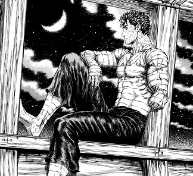

Berserk
Genre: Action, Adventure, Drama, Fantasy, Horror, Supernatural
Director: Kentaro Miura
Aired in Japan
Release Year: 1990
Plot Summary: The series follows Guts' journey seeking revenge on Griffith, who betrayed him and sacrificed his comrades to become a powerful demonic being.
Reasoning: The ultimate grim dark fantasy world wich shows everything wrong with humanity. Grandest hand drawn panels in all of manga and powerful emotions